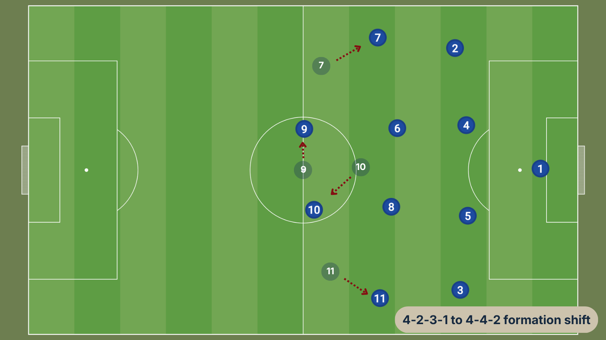
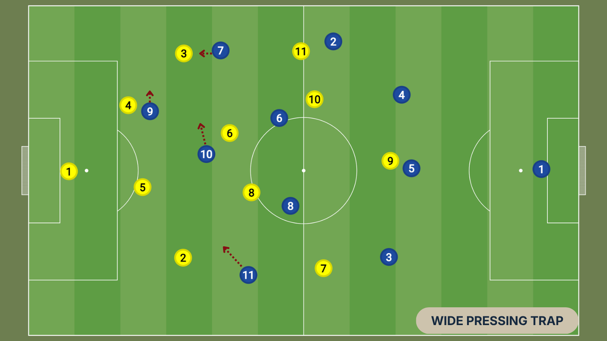
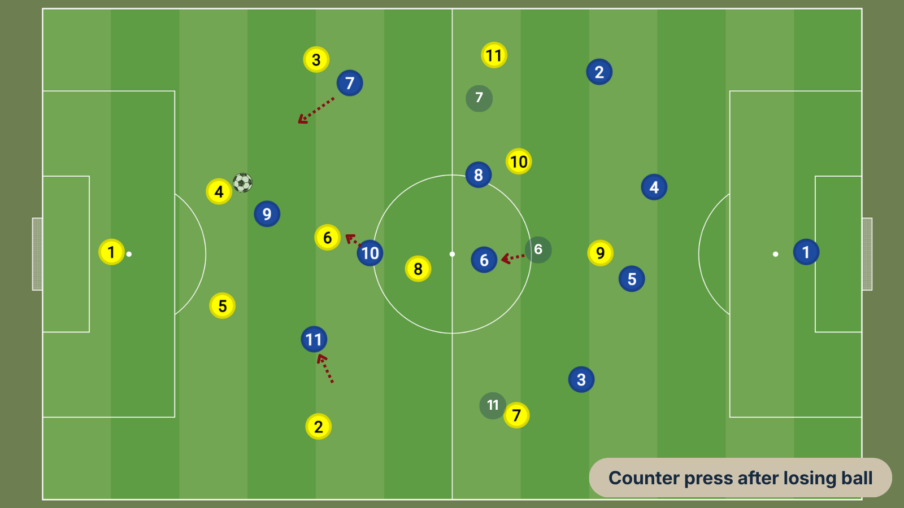
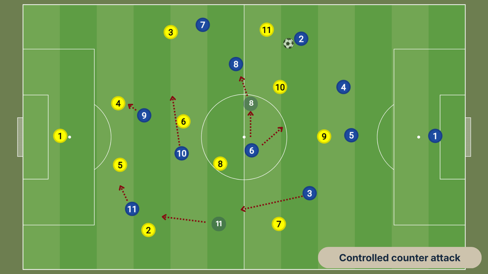
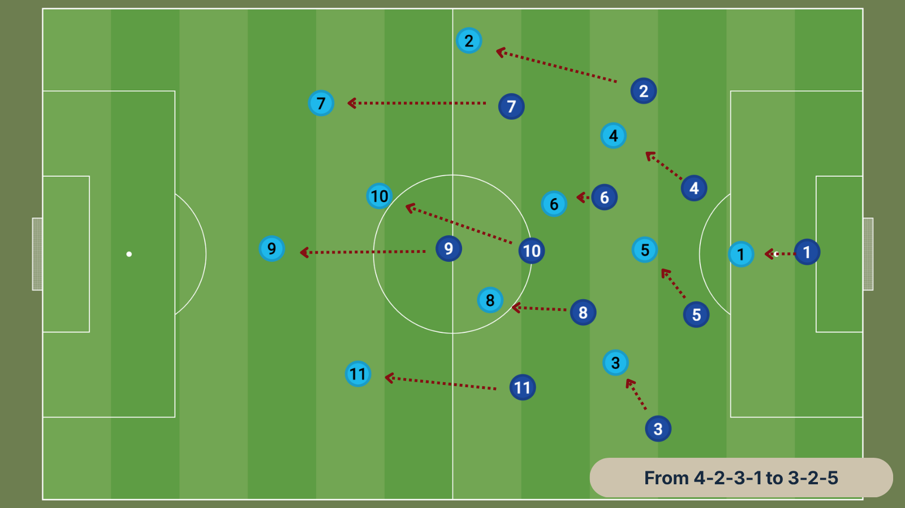
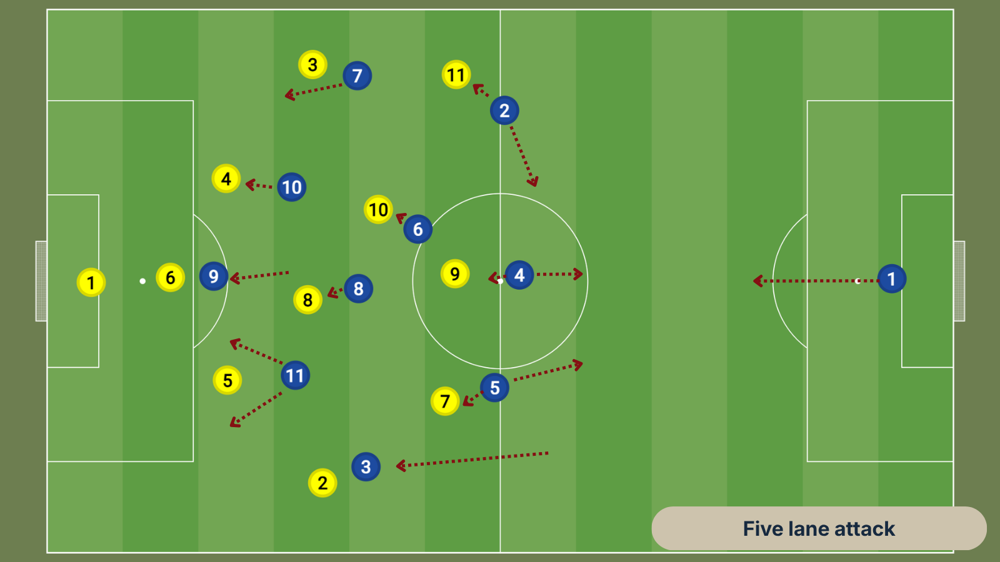
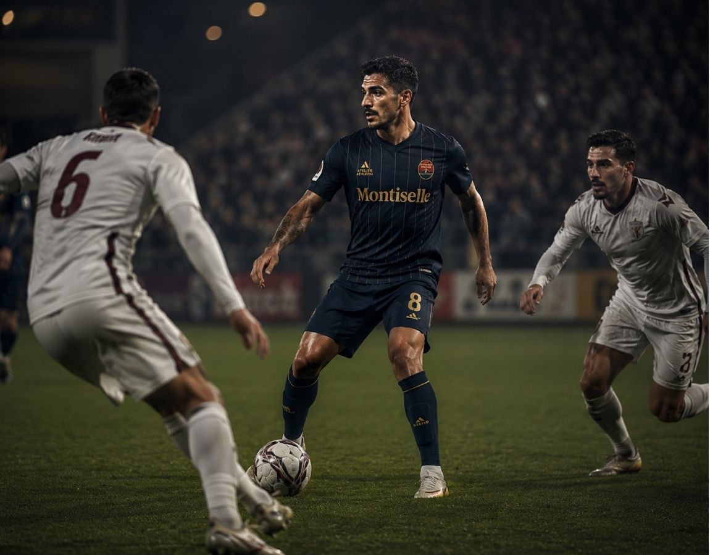
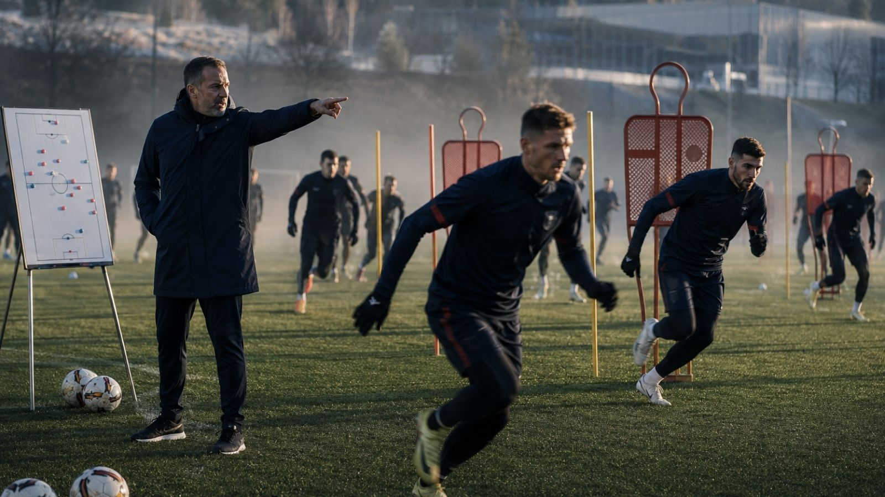
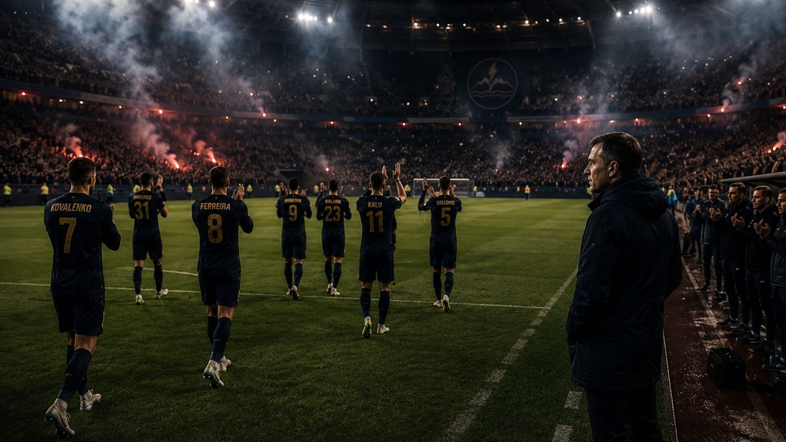

Anton Varga at Dynamo Bresno 2026/27:
High Pressing, Controlled Chaos & The Polvan Blueprint - Tactical Analysis
Anton Varga arrives at Dynamo Bresno with one of the clearest managerial identities in Valrekian football: hard discipline, structured pressing, targeted creative freedom and a willingness to adapt game plans around opponent weaknesses. His reputation was built at Red Star Polvan, where he transformed a previously modest frontier club into a Dalnic Premier League side through two promotions in three seasons, using aggressive, fearless and intensely organised football. His Dynamo appointment is therefore not simply a “new manager bounce” story. It is a tactical collision: Varga’s hard graft pressing ideology meets Montiselle’s wealthy, polished, technically gifted squad.
The obvious question is whether his Red Star Polvan model scales upward.
The answer: yes, but only if Dynamo accept that Varga’s football is not about affording the luxury of possession football with a bit of running added. It is a pressure machine built around territory dominance, compactness, emotional intensity and rapid recoveries after turnovers.
1. The Polvan Blueprint
At Red Star Polvan, Varga’s football was less about dominating possession and more about controlling where the opposition were allowed to play. His side did not need the ball for long spells to control the game. Instead, they controlled the opponent’s options.
Polvan’s rise happened because Varga created a team with four repeatable habits:
- Force play wide.
- Spring pressing traps near the touchline.
- Win second balls aggressively.
- Counter with structure rather than panic.
This is important. Varga is not a pure “chaos press” manager. He does not want eleven players chasing loose passes like dogs after a ball. His teams press to manufacture a specific next action. If the opponent goes to the full-back, that is not an accident. It is the trap.
At Polvan, where individual technical quality was limited, this approach gave his team a leveller. They could make better squads uncomfortable by dragging them into rushed choices, aerial duels, loose clearances and second-ball tussles. At Dynamo, he can use the same structure but with better technicians behind the press.
That changes the ceiling dramatically.
2. Base Formation: 4-2-3-1 Becoming 4-4-2 Out Of Possession
Varga’s likely Dynamo structure will begin as a 4-2-3-1, because it gives him his preferred balance: one central striker to press, one attacking midfielder to screen the pivot, two wide players to jump on full-backs, and a double pivot in the centre of midfield to protect transitions.

In settled possession this functions as a 4-2-3-1. Out of possession, the attacking midfielder steps alongside the striker to create a 4-4-2 pressing block.
This matters because the 4-4-2 shape gives Varga easy access to the opposition centre-backs while still blocking central progression. The striker presses one centre-back from an angle. The attacking midfielder can either block routes to the deepest midfielder or screen the second centre-back. The wide players remain close enough to both pressure the full-backs and screen the outfield ball.
At Red Star Polvan, this system enabled them to dominate lower league opposition, and then it became survival football that flourished to mid table in the Premier League. At Dynamo, it becomes a front-foot strategy capable of suffocating weaker DPL opponents inside their own half.
3. Pressing Principles: Aggression With A Locking Mechanism
Varga’s press is aggressive, but not reckless. The key is the direction of the first press.
The striker does not simply sprint at the ball-carrier. He curves his run to block the pass across the defensive line. The ball is pushed toward one side. Once the centre-back plays into the full-back, the trap activates.

The pressing cues are likely to be:
- A centre-back receiving with closed body shape.
- A backwards pass into the goalkeeper.
- A full-back receiving near the touchline.
- A poor first touch into the sideline.
- A central midfielder receiving with his back to play.
The full-back trap is where Varga’s Dynamo could become dangerous quickly. Aleksandr Kovalenko, already profiled as a powerful pressing striker who loves reducing space, is almost built for this role. If Kovalenko applied his first press properly, Dynamo’s wide player can push, the ball-side midfielder can block the inside lane, and the opposition full-back is only left with three poor options: back down the line, clipped ball forward, or risky inside pass.
4. Counter-Pressing: Five Seconds, Then Reset
Varga’s teams counter-press fiercely, but they are not naïve. The first five seconds after losing possession are treated as an opportunity to attack. If the ball cannot be recovered quickly, the team drops into its compact mid-block 4-4-2 shape, rather than allowing itself to become overstretched in the 4-2-3-1.

This is where the upgrade from Polvan to Dynamo becomes obvious. At Polvan, Varga needed structure because his players could not always solve problems technically. At Dynamo, players like Raul Ferreira and Stefano Toscano give him a chance to win the ball back and immediately play the first clean pass forward. Ferreira is described as a cultured passer with exceptional range, leadership and set-piece quality, while Toscano offers deep-lying playmaking and defence-splitting passes.
That means Dynamo’s counter-press is not only defensive. It is an attacking mechanism.
Win it. First pass forward. Third-man run. Shot.
A very Varga mechanism and not what Dynamo fans will be used to, which might be a good thing.
5. Controlled Counter-Attacks: Fast, But Not Frantic
The phrase “controlled counter-attack” is central to understanding Varga. He does not want endless possession for its own sake, but he also does not want hopeful long balls.
A Varga counter usually has three lanes:
- Ball carrier: the player who wins the ball or receives the first pass.
- Vertical runners: usually the striker and/or far-side winger attacking the space.
- Security runner(s): the midfielder(s) arriving late to sustain the attack if the first wave stalls.

At Dynamo, this pattern suits several players:
- Kovalenko pins defenders and presses from the front.
- Lucas Brenner can attack from either wing and threaten with long-range shots.
- Jean-Luc Martenne can carry the ball across attacking zones.
- Liam Fitzroy can operate as the chaotic number eight or ten arriving late, though Varga will need to manage his discipline and off-field volatility carefully.
- Kenji Sato, if introduced later, gives Varga a sharper between-lines technician who can turn counters into combinations rather than sprints.
Dynamo’s media pack already identifies Raul Sebastian as the central ball winner, Ferreira and Toscano as the midfield heartbeats and creativity, Fitzroy as the dangerous runner and space maker, Martenne as a skilful fans’ favourite, Villalobos as the flair number ten and both Kovalenko and Petrovic as relentless pressing strikers. That gives Varga midfield and attacking options with more variation than he had at Polvan.
The risk is obvious: too much talent can lead to unhappy squad members, yet too much variation can lead to imbalance or loss of form. Varga will not tolerate either for long and needs to enter the season with a balanced squad.
6. Build-Up: From 4-2-3-1 To 3-2-5
At Polvan, Varga’s build-up was functional: split centre-backs, one pivot showing for the ball, the other creating angles, full-backs cautious, then quick transitioning to quicker vertical progressions as the ball moved and space opened up.
At Dynamo, he can afford to build with more patience. Expect a 3-2-5 in possession, especially against lower-block opponents.

One full-back can invert or stay deeper, forming a back three. The other can push high. The double pivot staggers, with one player offering a secure passing angle and the other positioned to receive beyond the first pressing line.
This would allow Varga to do three things:
- Keep enough players behind the ball to stop counters.
- Create a stable passing base for Ferreira or Toscano.
- Free the wingers to receive higher and wider.
Dynamo have the squad for this. Andriy Melnyk is an overlapping left-back with precise crossing, while Jacek Kowalski is a tireless overlapping full-back with exceptional stamina and one-v-one defensive quality. Those profiles allow Varga to vary the “aggressive side” depending on an opponent’s weakness.
Against compact teams, Dynamo can overload one flank before switching quickly. Against stronger opponents, they can keep one full-back deeper and use counters from a more secure platform.
7. Attacking The Low Block: The Biggest Tactical Test
This is the part that will decide whether Varga becomes a decent Dynamo manager or a transformative one.
At Polvan, opponents often came forward against them and sought to attack. That gave Varga transition space. At Dynamo, many DPL sides will sit deep, protect the box and invite Dynamo to break them down. A pure pressing side can look blunt in those games because there is nothing to press.
Varga’s solution is likely to be structured occupation of five attacking lanes:

The aim is not just to cross endlessly. The aim is to pin the back line, draw midfielders out, and create cutback zones. Dynamo should attack the box with at least four bodies:
- Striker between centre-backs.
- Far-side winger at the back post.
- Attacking midfielder between penalty spot and D.
- Central midfielder arriving late.
This is where Fitzroy becomes tactically fascinating. His profile playing as either a talented box-to-box number eight or deep attacker in the ten, provides a relentless edge that makes him ideal for Varga’s second-wave attacks. But his off-field unreliability makes him exactly the kind of player Varga may use brilliantly for three months before dropping abruptly to make a point.
That is not just squad management. That is Varga culture-setting. He expects his players to give him absolute commitment.
8. Rest Defence: The Hidden Key
Aggressive pressing teams often concede soft goals when the press is beaten. Varga will know this. At Dynamo, he cannot afford to turn matches into basketball games, especially with the pressure of Montiselle ownership and the post-scandal rebuild.
Expect a 2-3 man core defence when attacking. Or, when one full-back is high. The important player here may be Raul Sebastian, and Emil Kovac when he deputises. Both are midfield destroyers who rarely venture forward, read the game well and enjoy breaking up opponent attacks. In matches where Varga expects transitions against him, Sebastian or Kovac provide Dynamo with security when sat deep. Ferreira gives control. Toscano gives progression. Fitzroy gives vertical chaos. Sebastian and Kovac provide the protection. Finding a way to combine them all will be the interesting experiment.
9. Defensive Shape: Compact, Narrow, Nasty
When the high press is bypassed, Varga will not want Dynamo defending in a stretched 4-2-4. He will demand a narrow 4-4-2 or 4-4-1-1, depending on the attacking midfielder’s role.
The block will try to protect central spaces and funnel play wide. Once the ball goes wide, Dynamo can jump again.
The central defenders matter enormously, and Dynamo have a wealth of talent to choose from. Viktor Kosa, described as a club stalwart, defensive leader, hard tackler and captain, feels like Varga’s natural on-pitch lieutenant. Petar Simic is vastly experienced and tough as old boots. Omar Al-Faraj is a Rolls Royce of a centre-back, with a capable deputy in the shape of rising star Nico Jovanovic. Both are calm, composed, ball-playing and viewed as future captain material.
The short-term pair may be experience plus aggression. The long-term evolution is clearer: Dynamo need centre-backs who can defend large spaces, step into midfield and pass through pressure. Without that, Varga’s high line becomes vulnerable.
10. How Varga Translates From Polvan To Dynamo
The key difference between Polvan and Dynamo is not tactics, but rather the squad available to implement them.
At Polvan, Varga needed the system to compensate for squad limitations. At Dynamo, the system should amplify elite qualities.
What stays the same
- High emotional intensity.
- Aggressive pressing triggers.
- Compact defensive distances.
- Fast forward play after regains.
- Strong dressing-room standards.
- Low tolerance for passive players.
What changes
- More patient build-up.
- More rotations between midfielders.
- More use of inverted full-backs.
- More capacity to dominate low blocks.
- Greater pressure to entertain, not just win.
The danger is cultural rather than tactical. Dynamo’s Montiselle era has created a club focused on branding, aesthetics, polished media and luxury experiences. Varga’s football is rooted in authenticity, discomfort and daily standards. His profile already marks him as a figurehead whose credibility protects Montiselle from accusations of interference, but also as someone whose independence could threaten total ownership control.
That tension will show up on the pitch. Players who press will play. Players who pose will sit. The first major selection controversy is almost inevitable.
Football Manager Tactical Translation
Suggested FM formation. Primary shape: 4-2-3-1 DM AM Wide. Alternative: 4-3-3 DM Wide against stronger opponents. Late-game chase: 4-2-4 with pressing forward plus advanced forward.
Mentality. Positive as default. Balanced away to Union Dalnica, Velkovic Eagles or European-level opponents. Attacking only when chasing or facing deep domestic underdogs.
In possession
- Higher tempo.
- Fairly narrow or standard attacking width depending on wingers.
- Pass into space.
- Work ball into box against low blocks.
- Underlap one side if using an inverted full-back.
- Run at defence if using Martenne, Brenner or Barros.
- Low crosses when Kovalenko is pressing forward; mixed crosses if Petrovic plays.
In transition
- Counter-press.
- Counter.
- Goalkeeper distribute quickly to centre-backs or full-backs.
- Against strong press: slow pace down, distribute to centre-backs, invite pressure, then release Ferreira/Toscano.
Out of possession
- Higher defensive line.
- Higher line of engagement.
- More often trigger press.
- Prevent short goalkeeper distribution.
- Trap outside.
- Get stuck in only for derby/high-emotion matches; otherwise keep discipline.
Key Player Roles
Aleksandr Kovalenko: Pressing Forward / Support or Complete Forward / Support. He sets the tone. His job is to lead the press, pin centre-backs and attack the near post.
Raul Ferreira: Deep-Lying Playmaker / Support. The controller. If Varga wants more risk, use him as Roaming Playmaker, but only with Sebastian or Kovac behind him.

Stefano Toscano: Deep-Lying Playmaker / Defend. Best against teams that sit deep and allow him time to pass.
Raul Sebastian: Ball-Winning Midfielder / Defend or Defensive Midfielder / Defend. Use him when protecting the rest defence.
Liam Fitzroy: Central Midfielder / Attack or Mezzala / Support. High upside, high maintenance. Best as the late runner in controlled counters.
Lucas Brenner: Inside Forward / Attack. The wide goal threat. Let him attack the half-space rather than hugging the touchline.
Jean-Luc Martenne: Inverted Winger / Support or Advanced Playmaker wide. Best when Dynamo need ball-carrying and flair against low blocks.
Andriy Melnyk: Wing-Back / Support. Crossing outlet on the left.
Jacek Kowalski: Wing-Back / Attack in domestic matches, Full-Back / Support in Europe.
Viktor Kosa: Central Defender / Defend. Leader, organiser, aerial presence.
Nico Jovanovic: Ball-Playing Defender / Defend. Long-term system fit.
Strengths & Weaknesses
Strengths. Varga gives Dynamo a hard tactical spine after the disastrous 2025/26 season. The club need credibility, standards and visible work rate. His football gives them all three. It turns Dynamo from a team of expensive individuals into a team with a coherent strategy and identity.
The press should produce quick attacks and transitions. The double pivot gives control. The front four gives variety. And the emotional edge of Varga’s leadership reconnects Dynamo with its pre-luxury industrial identity.
Weaknesses. The system asks a lot from wide players. Farid Karam, Nico Vanic, Tomas Varga, Jean-Luc Martenne, Diego Barros and Lucas Brenner may not all enjoy the defensive burden. If the wingers fail to move or press at the right moment, the full-backs become exposed. If the double pivot is too adventurous, the centre-backs face too much open space.
There is also a personality risk. Varga’s best teams run because they believe and because no one individual is bigger than the group. Dynamo’s squad has talent, ego, commercial pressure and off-the-field noise. He must win over the dressing room before he can begin to implement and perfect the strategy.
Final Prediction

Varga will not simply copy Red Star Polvan. He will transplant the core of its method and principles, but expect to see adaption and evolution emerging from the training pitch into match days.
The Polvan version was a survival machine: press, fight, run, counter. The Dynamo version should be more sophisticated: press, trap, regain, counter, control.
Expect Dynamo to begin the season as a high-variance side: thrilling in transition, occasionally vulnerable behind the press, and visibly more intense than under Gavinic. By winter, if the players buy in, Varga’s 4-2-3-1 should become a 3-2-5 attacking structure with a 4-4-2 pressing spine.
That is the real tactical promise: not Hollywood football, not underdog football, but something sharper and more progressive.
In short, we should see a rich and wealthy club learning to play like it still has something to prove.
